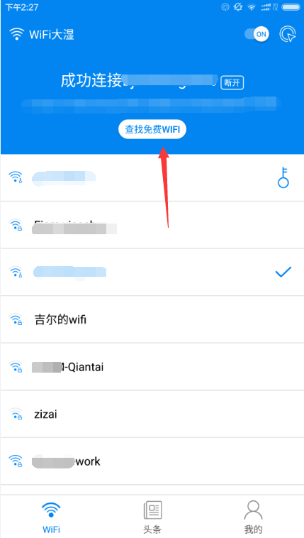
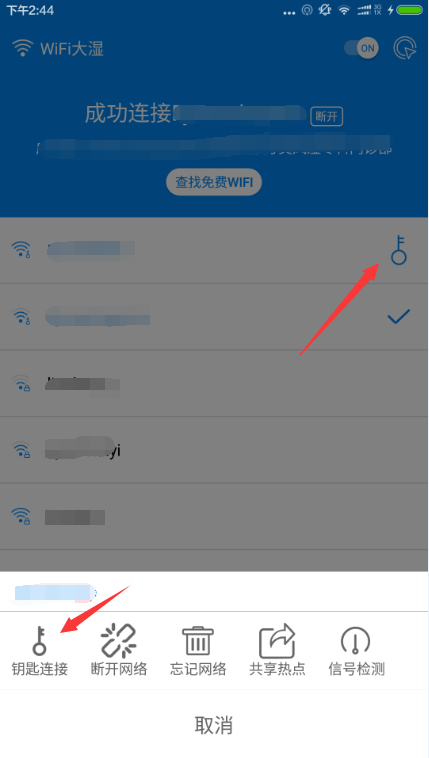
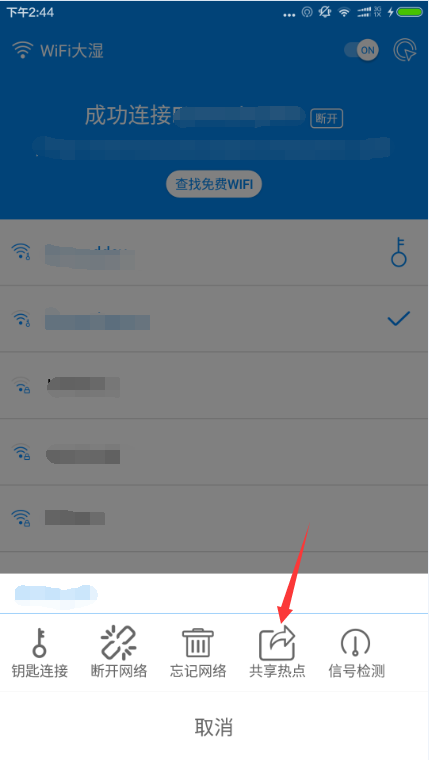
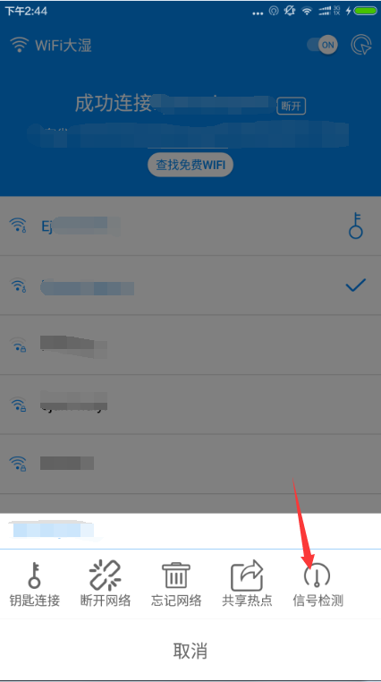
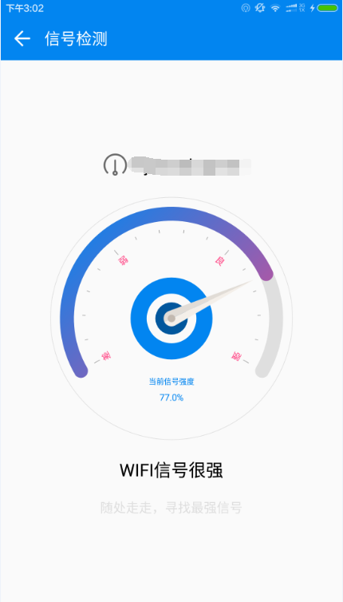
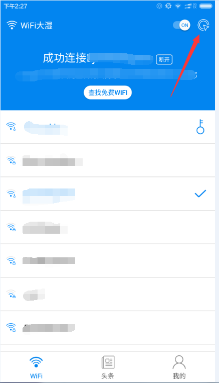
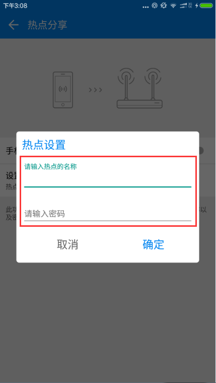
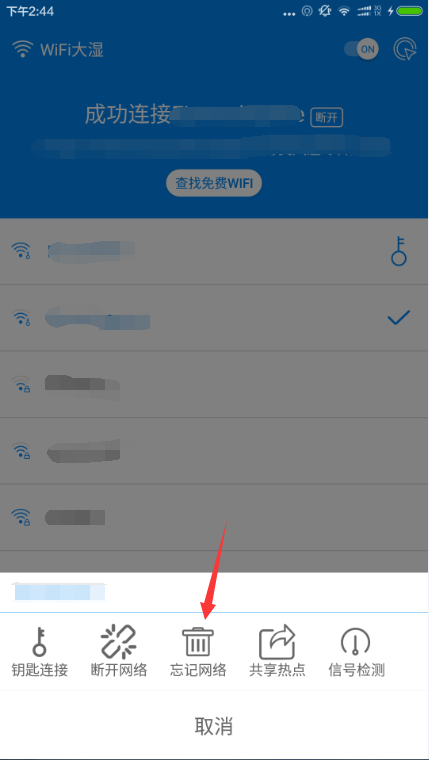

点击免费查找WiFi按钮，WiFi大湿就会自动的去寻找附近的免费的WiFi热点。成功查找后，在下列的WiFi列表中，如果是免费的热点，右侧就会出现有钥匙的图表。

在有钥匙图标现在的WiFi中，点击该图标，就出出现在使用钥匙连接，点击钥匙连接，就会自动连接，连接成功后，就可以免费的使用该WiFi啦。

点击你想要的共享的WiFi，会出现共享热点的按钮，点击共享热点按钮后，正确的输入密码后，就可以进行WiFi的共享了。共享热点，就相当于多人都可以使用此热点
 
点击你想要检测的WiFi，就可以检测该WiFi的信号强度了。WiFi的信号强度会因距离WiFi热点的位置的改变而改变，随意的走动，寻找最强的WiFi
图1
图2

点击图1的创建WiFi热点的图标，正确的输入图2显示的热点名称与密码后即可创建WiFi热点。
注意:创建WiFi热点，就是要使用该热点的数据网络。别的手机就可以通过搜索到你的热点进行连接并使用热点的数据网络

连接WiFi时，想要切换WiFi，使用直接连接一直连接不成功的原因是什么？1：密码错误了；密码是上次连接时系统记录下来的，如果密码错误或者密码修改了，就会出现直接连接不成功。2：连接超时。
解决办法:点击忘记密码。忘记密码后，再次连接WiFi就会出现输入密码进行连接。Android6.0的手机，可能会由于系统的原因，无法忘记密码。可以在手机设置里，找到WLAN进行对此WiFi忘记密码。